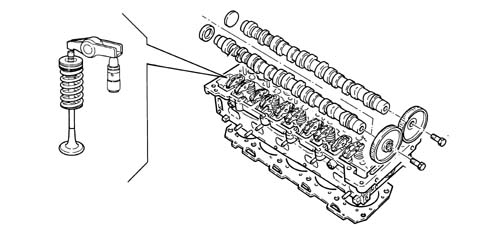

INTRODUCTION - TAPPETS AND ROCKER SHAFTS
- Path
- Descriptions > 10 ENGINE > 1036 TIMING SYSTEM > 1036H TAPPETS AND ROCKER SHAFTS > INTRODUCTION - TAPPETS AND ROCKER SHAFTS
- Kind
- system description
- Applies to
- engines: 2.4 JTD 20v; all production periods
- Interactive page
- https://sloeber94.github.io/elrnDB-aBrrSpdr/en/#/946003070
Applies to: engines: 2.4 JTD 20v; all production periods
TAPPETS
Specifications
Type
Each valve uses a hydraulic tappet operated by a rocker arm, in turn, moved by the camshaft.
The rocker arms are designed to prevent serious damage to the other engine components if the timing belt slips or breaks; in effect, as a result of pre-set fracture lines, the stresses caused through the contact of the valves with the pistons are absorbed.
